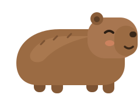

Horas perdidas
Copiar, colar e conferir dados consome o dia de quem poderia estar analisando, vendendo ou atendendo.
Automação de processos com Python, 100% em português. Simples para começar, completa para ir à produção.

Planilha, portal, e-mail, conferência. O time gasta horas em tarefas que não mudam de um dia para o outro.
Copiar, colar e conferir dados consome o dia de quem poderia estar analisando, vendendo ou atendendo.
RPA tradicional cobra por robô, por licença e por consultoria. A conta não fecha para times pequenos.
Quando o robô roda escondido, ninguém sabe se falhou, quanto demorou ou quem acessou o quê.
Ctrl+C, Ctrl+V, planilha, e-mail e “alguém confere depois”.
Um robô roda, registra cada passo e avisa quando termina.
“Automação não é sobre demitir. É sobre parar de contratar trabalho repetitivo.”
A Capivara transforma bibliotecas complexas em funções descritivas em português. Você escreve o processo; ela cuida do Selenium, pandas, requests e da orquestração.
abrir_url, clicar_elemento, ler_csv, enviar_email.Do primeiro script ao robô rodando sozinho de madrugada — sem virar refém de ferramenta cara.
Use funções que falam a sua língua. O Selenium, o pandas e o requests ficam por baixo dos panos.
nav.clicar_elemento("#entrar")
Intervalo, horário, cron, dias da semana, feriados e fila de itens. Cada robô pode rodar na máquina certa.
seg a sex · 06:00
Jobs, passos, erros e tempo em tempo real. O Monitor mostra o trace e a Lagoa mostra o negócio.
Job #42 · concluído
63 ações em português: clicar, ler, arrastar, iframe, download, captura e abas.
Onde a mágica das capivaras acontece. Máquinas, processos, jobs e agentes no mesmo painel.
Itens com prioridade, retentativa, pausa e round-robin entre executores.
Intervalo, diário, cron, dias úteis, fins de semana e feriados nacionais.
Credenciais cifradas, versões, rotação, permissão por processo e auditoria.
Trace de execução, passos, níveis de log e status de cada robô.
Sem decorar API. Sem 300 linhas de Selenium. O fluxo fica curto, legível e fácil de manter.
ErroRPA e ErroCriticoRPA.# robô de login + captura
from capivara_rpa import Navegador
with Navegador() as nav:
nav.abrir_url("https://portal.exemplo.com")
nav.escrever_texto("#usuario", "ana")
nav.escrever_texto("#senha", senha)
nav.clicar_elemento("#entrar")
nav.aguardar_url_contem("/painel")
nav.capturar_tela("data/output/portal.png")
# o log já registra cada passo
Extensão de Chrome que grava os elementos enquanto você navega. Clique no que importa, exporte JSON e use direto no robô.
core.rpa.tracktab.chrome://extensions.Chrome Web Store em breve.
Lagoa, agendamentos e monitor com a mesma identidade — tema claro e escuro.


A Lagoa orquestra robôs. O Cloud orquestra APIs.
Monte fluxos visuais, conecte Slack, e-mail, Excel, HTTP e mais, e acompanhe cada passo da execução.
Beta público e gratuito. Rode local com python -m app.main.
O que a empresa precisa para deixar um robô rodando em produção sem perder o sono.
Usuários locais, permissões por papel e sessão com cookie HttpOnly.
Cada agente tem seu token; só o hash fica no banco. Revogou, acabou.
Certificado e chave configuráveis para sair da rede local com segurança.
Quem acessou, quando, de onde e qual credencial. Exportação em CSV.
Jobs estourados e tempo de execução aparecem no topo do painel.
Fernet, versões, rotação, permissão por processo e segredos mascarados no log.
Escolha o caminho. O resultado é o mesmo: menos Ctrl+C, Ctrl+V.
# opção 1 — biblioteca
pip install capivara-rpa
# kit completo (Selenium + pandas + cofre)
pip install "capivara-rpa[all]"
# opção 2 — repositório
git clone https://github.com/capivara-rpa/capivara.git
# opção 3 — instaladores sem Python
# Windows, macOS e TrackTab nas releases
Base leve em segundos. Use [web] ou [all].
Clone, explore os exemplos e acompanhe as releases.
Lagoa e agente para Windows e macOS, sem Python.
O código é aberto. Se a empresa quer ir para produção rápido e com segurança, a Capivara trabalha junto.
Grátis pra sempre
Implantação + suporte
Comece grátis pelo PyPI, clone o repositório, teste o Cloud beta ou fale com o time para uma implantação sob medida.